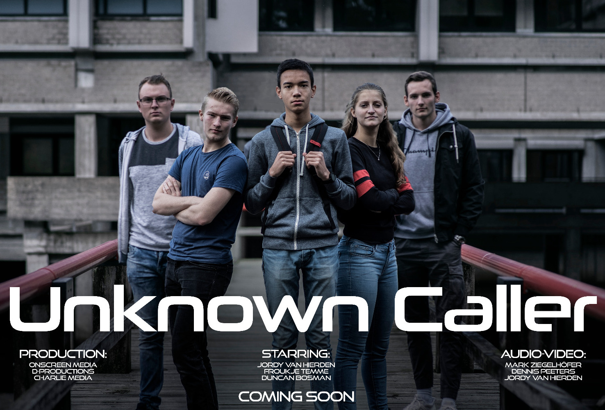

Blog
Welcome to my blog! On this page I will give updates once in a while about my projects and recent developments. Enjoy!
THESIS
By Froukje Temme , Sept 17, 2022
Nowadays, interactive technology is becoming more embedded in the world of sports. Whereas much is available for the regular athlete, little is tailored specially to the needs of athletes with intellectual disabilities. This is unfortunate
for this user group since they can profit a lot from the benefits of interactive technology, such as improving motor skills, social skills, and self-esteem. Via literature research, interviews, and observations, it has been shown that
special athletes experience difficulties with verbally explained exercises. Many of them experience some sort of language comprehension, memory deficit, short attention span, impulsive behavior, and/or hearing deficit, which makes it hard
for them to comprehend verbal information. This causes the children to not understand and not be engaged in the exercise and the training. Therefore, the aim of this study is to explore the use of alternative media to facilitate the
instruction of motor movement for special athletes.
The creative technology design process is used as a base to address this gap in research, which consists of the ideation, specification, realization, and evaluation phase. This has eventually led to a prototype, which is an add-on
instruction system for athletics equipment, that will guide athletes with intellectual disabilities through exercises. This prototype has come forth out of (non-)functional system requirements and is afterward tested with three user tests.
In these tests, it became clear that with the prototype; fewer mistakes are made, exercises are completed faster, less time is needed for verbal explanation and more children understand the exercises at once. The special athletes express
their preference for the system and the trainer reveals positive feelings towards the prototype. The prototype has achieved its goal, which is to improve understanding and engagement in exercises for children with intellectual disabilities.
Certain limitations, such as the number of test participants and the number of obstacles have to be further researched before a general claim for all special athletes can be made.
The full thesis can be found on https://essay.utwente.nl/92144/ or click here .
GOGBOT
By Froukje Temme , June 10, 2020

What will be the impact of quantum supremacy on our lives? What will change and what will be the same? Should we even want quantum supremacy? All these questions are hard to answer. Quantum computing has a lot of advantages, but there are also disadvantages. For example: because of the computing power of a quantum computer, research about protein folding could change medicine forever. The company that builds the first quantum computer could monopolise those medicines. The increase in computing power could lead to better AI to help us in our lives, but also help people or governments with malicious intent with tracking.
Do the negatives outweigh the positives? That is personal. What is important, is that we take a minute and think about the long term impact of quantum computing. History has shown that we often fail, because we tend to think about the short term. Quantum computing can be good or bad, so we need to decide what to do with it!
LITERATURE RESEARCH: WEARABLE TECHNOLOGY
By Froukje Temme , May, 2020
Wearable technology (WT) becomes nowadays more prominent in the form of sensors and data collection. While WT is becoming a ubiquitous part of our life, it is not really well known and popular yet. Our literature research aims to find out what the current status of WT is on the marked and why it is not popular yet, what boundaries are for people to (not) connect with it and finally if WT is actually significantly helping during activities. Nine studies out of fifty-two are chosen from two databases, between 2009 and 2020, using the extraction procedure with PRISMA guidelines. Findings of the research are that WT is not focusing on the correct development aspect, namely on the hardware improvements instead of the social normalization (1). WT has shown significant positive results but is not widely used due to lack of consistent information in privacy, reliability and effectiveness (2). Further research can be using WT as motivation (1) and finding solutions for discovered boundaries (2).
FINAL MODULE EXPOSITION
By Froukje Temme , Nov 6, 2019

On november 5th, the final exposition of the first module is being held. The project is part of the module called 'We Create Identity', a module of the bachelor Creative Technology at the university of Twente. During this day the projects were shown, which included the interactive
video project, programming (processing) programs and the online portfolio website.
During the day there was a ongoing contest between the project groups for the best interactive video created. The video that was created by me and my project group received the first price. More information about it can be read in the portfolio section, and a trailer can be found below.